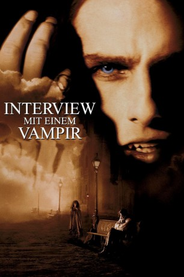

#1161 Interview mit einem Vampir
Alternativ: Interview with the Vampire: The Vampire Chronicles
Auszeichnungen: für 2 Oscars nominiert 2 BAFTA-Awards gewonnen
 
 IMDB-Wertung: 7.6 / 10
IMDB-Wertung: 7.6 / 10  Metascore: 59
Metascore: 59 
Der Vampir Louis erzählt in der Jetztzeit dem Journalisten Malloy die Geschichte seiner Existenz: Als Plantagenbesitzer wird er, nachdem er im Anschluß an den Tod seiner Frau jeden Lebensmut verloren hat, im Jahre 1791 von dem Vampir Lestat auf eigenen Wunsch gebissen und selbst zu einem Vampir gemacht. Doch Louis fängt schon bald an, seine Existenz zu hassen und will schon bald keine Menschen mehr töten. Damit Louis wie in einer Familie leben kann, macht Lestat auch ein kleines Mädchen zu einem Vampir. Doch Konflikte sind vorprogrammiert, während die Zeit vergeht und Louis und Lestat werden zu Feinden.
Jahr: 1994
Dauer: 123 Minuten
FSK: 16
Land: USA Studio: Geffen PicturesTonspuren:
Untertitel: Deutsch,
Auflösung: 1080p (1920x1080) Größe: 9748 MB
Genre: Drama, Horror
Regisseur: Neil Jordan
Drehbuch: Anne Rice, Anne Rice
Soundtrack: Elliot Goldenthal
Darsteller:
 Brad Pitt als Louis
Brad Pitt als Louis Christian Slater als Malloy
Christian Slater als Malloy John McConnell als Gambler
John McConnell als Gambler Tom Cruise als Lestat
Tom Cruise als Lestat Bellina Logan als Tavern Girl
Bellina Logan als Tavern Girl Thandie Newton als Yvette
Thandie Newton als Yvette Indra Ové als New Orleans Whore
Indra Ové als New Orleans Whore Helen McCrory als 2nd Whore
Helen McCrory als 2nd Whore Kirsten Dunst als Claudia
Kirsten Dunst als Claudia Roger Lloyd Pack als Piano Teacher
Roger Lloyd Pack als Piano Teacher Stephen Rea als Santiago
Stephen Rea als Santiago Antonio Banderas als Armand
Antonio Banderas als Armand Marcel Iures als Paris Vampire
Marcel Iures als Paris Vampire Susan Lynch als Paris Vampire
Susan Lynch als Paris Vampire Matthew Sim als Paris Vampire
Matthew Sim als Paris Vampire Andrew Tiernan als Paris Vampire
Andrew Tiernan als Paris Vampire- Laure Marsac als Mortal Woman on Stage
- Domiziana Giordano als Madeleine
 Reese Foster als Pall Bearer , uncredited
Reese Foster als Pall Bearer , uncredited- Ben Gardiner als Bum , uncredited
 Danny Kamin als Carlos, Plantation Overseer , uncredited
Danny Kamin als Carlos, Plantation Overseer , uncredited Erick Vinther als Taxi Driver , uncredited
Erick Vinther als Taxi Driver , uncredited Glenn Webster als Cinema Audience , uncredited
Glenn Webster als Cinema Audience , uncredited- Virginia McCollam als Whore on Waterfront
- Mike Seelig als Pimp
- Lyla Hay Owen als Widow St. Clair
- Lee E. Scharfstein als Widow's Lover
- Monte Montague als Plague Victim Bearer
- Nathalie Bloch-Lainé als Maid
- Jeanette Kontomitras als Woman in Square
- George Kelly als Dollmaker
- Nicole DuBois als Creole Woman
- Micha Bergese als Paris Vampire
- Rory Edwards als Paris Vampire
- Louise Salter als Paris Vampire
- François Testory als Paris Vampire
- Simon Tyrrell als Paris Vampire
- George Antoni als Paris Vampire
 Sara Stockbridge als Estelle
Sara Stockbridge als Estelle- Katia Caballero als Woman in Audience
- Louis Lewis-Smith als Mortal Boy
- Rusty Gregoire als Party Guest , uncredited
- Jacquelyn Twodat Jackson als Party goer , uncredited
- Doron Jacobs als Mortal Ticket Collector , uncredited
- Gustavo I. Ortiz als American Soldier , uncredited
- John Risso als Comedia troupe actor , uncredited
- Rafael Siegel als Pedestrian , uncredited
- Greta Valenti als Girl in Alley , uncredited
- Robert 'Bobby Z' Zajonc als News Anchor , uncredited
Datei: X:\1994\Interview mit einem Vampir (1994, FSK16, 1920x1080).mkv seit 29.05.2015
Festplatte: HD 1992-1995
 Es gibt insgesamt 67 Filme in der Gruppe '1994'
Es gibt insgesamt 67 Filme in der Gruppe '1994'